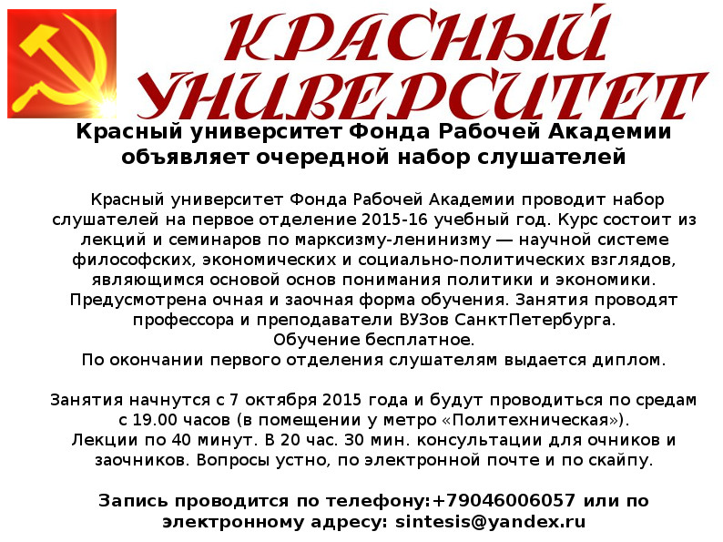
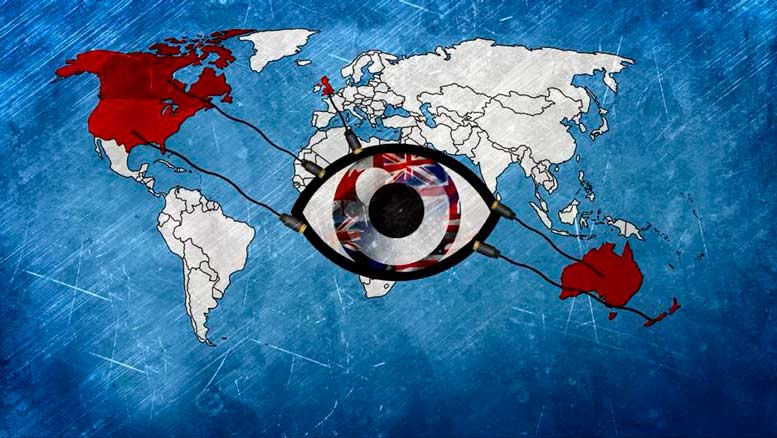
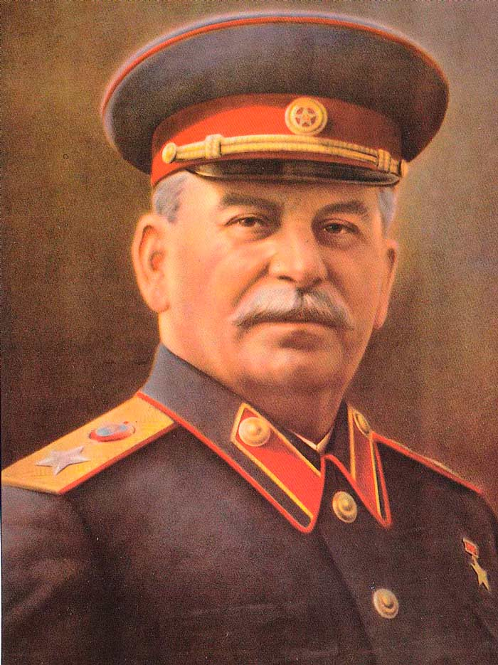
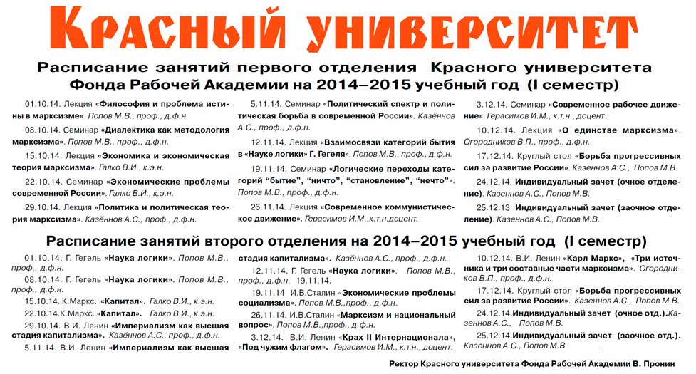
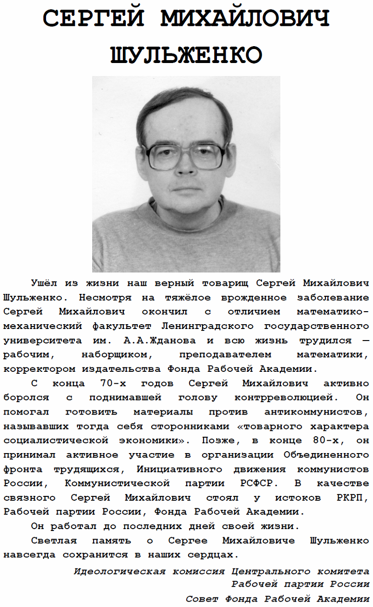
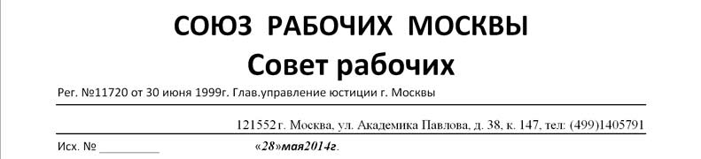
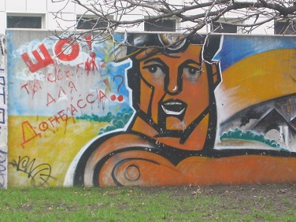
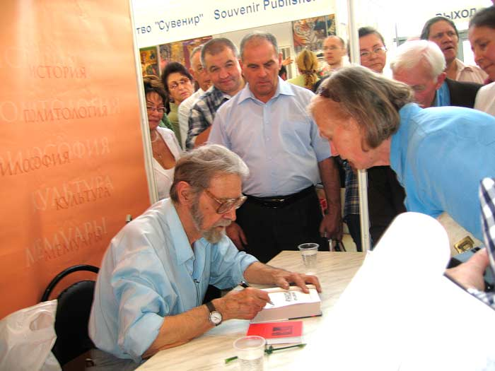
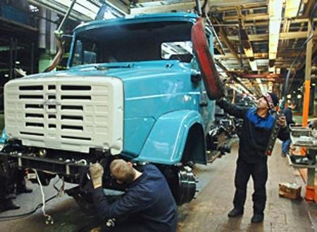
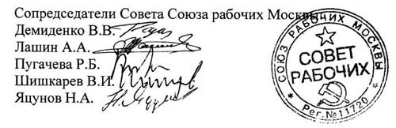

|
|
ВЫПИСКА ИЗ ПРОТОКОЛА СОБРАНИЯ
ЛЕНИНГРАДСКОЙ ОРГАНИЗАЦИИ РАБОЧЕЙ ПАРТИИ РОССИИ |
Ленинград | 28.07.2018 |
|
3. Обострение политической ситуации в стране и наши задачи
СЛУШАЛИ: Сообщение И.М.Герасимова.
ВОПРОСЫ ЗАДАЛИ: К.В.Юрков, Д.П. Колпаков.
ВЫСТУПИЛИ: К.В.Юрков, Д.Ю.Шилов, Д.П.Колпаков, В.А.Кучук, Е.Н.Хорошев, И.М.Герасимов, А.В.Токарев.
ПОСТАНОВИЛИ: В результате принятия в первом чтении антинародного закона о повышении пенсионного возраста возросла политическая активность масс. В этой ситуации нам следует усилить борьбу за сокращение рабочего дня до 6 часов, повышение реального содержания заработной платы и доведение ее до уровня стоимости рабочей силы, улучшение других условий труда. Для этого Фондом Рабочей Академии и Рабочей партией России создается Инициативный комитет первичных профсоюзных организаций и фабрично-заводских комитетов рабочих с перспективой вхождения профорганизаций в Федерацию профсоюзов России. Председателем комитета назначен тов. Бобинов Григорий Вячеславович.
Учитывая антинародный характер правительства и парламентских партий, трудящимся следует в качестве перспективы готовиться к созданию на волне забастовочной борьбы Советов и, в дальнейшем, к созыву Съезда Советов и формированию Советского правительства.
Советское правительство установит 6-часовой рабочий день, примет меры по улучшению других условий труда, обеспечит повышение реального содержания заработной платы и доведет ее до уровня стоимости рабочей силы, установит право выхода на пенсию по достижении 360 месяцев рабочего стажа.
Электронная почта тов. Бобинова Г.В. Bobinov24874@mail.ru, тел. +7(962)700-53-96
|
Председатель собрания | В.А. Кучук |
Секретарь собрания | А.В. Токарев |
РЕКОМЕНДАЦИИ
Международной научно-практической конференции
«Участие профсоюзов
в создании и деятельности Советов»

Конференция отмечает, что профсоюзы как самые массовые организации рабочего класса служат основанием для создания Советов, образующих в их единстве организационную форму диктатуры пролетариата.
Советы создаются в ходе и как органы широкомасштабной забастовочной борьбы, а организация забастовок — это дело профсоюзов. Именно профсоюз производственного предприятия подготавливает забастовочные требования, организует коллективные действия в их поддержку, обеспечивает направление делегатов от предприятия в городской (поселковый) Совет, при необходимости осуществляя отзыв и замену таких делегатов, вносит свой вклад в материальное и финансовое обеспечение деятельности Совета и его защиту. Благодаря постоянной поддержке профсоюзов, объединенных в общегосударственном масштабе, Советы превращаются в органы государственной власти рабочего класса.
В системе Советской власти профсоюзы сохраняют и упрочивают свою основополагающую роль. Они — организаторы выборов, а также замены и отзыва депутатов Советов производственными коллективами. Профсоюзы обеспечивают подбор и направление работников предприятий для участия в работе комиссий Советов, организуют рабочий контроль в форме шефства заводов над аппаратом Советского государства, содействуют практике сочетания рабочими производственной работы и выполнения ответственной работы в Советских государственных учреждениях. Профсоюзы добиваются систематического сокращения рабочего дня без понижения заработной платы и использования части высвобождаемого времени для обучения всех работников теории и практике управления Советским государством. Благодаря такой деятельности профсоюзов открывается перспектива утверждения Советской власти в качестве формы общественного самоуправления, нацеленного на обеспечение полного благосостояния и свободного всестороннего развития всех членов общества.
Профсоюзы способны обеспечивать создание и деятельность Советов только при условии активной работы партии рабочего класса во всех профсоюзных организациях. Работа в профсоюзах — приоритетная задача для партии рабочего класса.
Нижний Новгород, 13 октября 2017 г.
|

|
А. Теркин
Как живут и борются
современные рабочие активисты. РКР.
21–22 марта состоялся семинар Российского комитета рабочих (РКР) в Нижнем Новгороде, где мне довелось быть корреспондентом. Присутствовало 10 делегатов с решающим голосом (прибывшие от реальных рабочих коллективов), ещё полтора десятка... Далее
|

ПРИГЛАШЕНИЕ
НА НАУЧНО-ПРАКТИЧЕСКУЮ КОНФЕРЕНЦИЮ
Приглашаем принять участие в Международной научно-практической конференции «Экономические и правовые вопросы борьбы профсоюзов за решение проблем социального развития», которая состоится 9 октября 2015 г. в Нижнем Новгороде.
В числе организаторов конференции: Федерация профсоюзов России, Невинномысский институт экономики, управления и права, Фонд Рабочей Академии, Институт теории и практики профсоюзного движения.
В конференции принимают участие ученые, профсоюзные работники, рабочие.
Планируется выпуск сборника материалов конференции (принимаются статьи объемом до 7 страниц).
Конференция пройдет в ауд. 304 Колледжа теплоснабжения и автоматических систем управления (бывшего учебного центра «ИНФРАКОМ») по адресу: Нижний Новгород, ул. Нартова, д. 23 (проезд от железнодорожного вокзала на автобусе № 26 и маршрутном такси № 5 до остановки «Улица Нартова»). Начало работы конференции в 14.00.
О намерении участвовать в конференции просьба сообщить в оргкомитет до 1 октября 2015 г. по e-mail: fra-len@mail.ru, avzolotov2@gmail.com.
Председатель оргкомитета конференции,
директор Института теории и практики
профсоюзного движения Фонда Рабочей Академии
и Федерации профсоюзов России,
доктор экономических наук, профессор А.В.Золотов
|
|
Н. Касперская
Импортозамещение в области
оборонно-промышленного комплекса
необходимо уже сегодня

На днях Министерство экономического развития РФ обнародовало данные об объемах государственных закупок в области программного обеспечения (ПО) в 2014 году... Далее
|
ЛЕНИНГРАДСКОЕ ОТДЕЛЕНИЕ ФОНДА РАБОЧЕЙ АКАДЕМИИ
ЛЕНИНГРАДСКАЯ ОРГАНИЗАЦИЯ РАБОЧЕЙ ПАРТИИ РОССИИ
ПУШКИНСКИЙ РАЙКОМ РКРП, РКСМ(Б) И РОТФРОНТА ЛЕНИНГРАДА
КРАСНЫЙ УНИВЕРСИТЕТ
РЕКОМЕНДАЦИИ
научно-практической конференции
«И.В. СТАЛИН — РУКОВОДИТЕЛЬ ГОСУДАРСТВА
ДИКТАТУРЫ ПРОЛЕТАРИАТА»

Ученые, представители средств массовой информации, общественных организаций, политических партий и другие участники конференции, обсудившие всестороннюю деятельность... Далее |
|
А.Казеннов
Диктатура пролетариата:
термин, понятие, идея, проблема
Термин «диктатура пролетариата» возник в марте 1852 года в письме К.Маркса своему другу и соратнику И. Вейдемейеру. По форме это выглядит как частное высказывание в частном разговоре. Но контекст и новое словосочетание в высказывании не оставляют сомнений, что речь идет о чем-то чрезвычайно важном... Далее
|
|
Центральный комитет
Российской коммунистической рабочей партии
Борьба коммунистов
с империализмом как источником войн

Третий Коммунистический интернационал вёл большую теоретическую работу, в том числе предсказал фашизм, дал определение фашизму. Глубоко научным... Далее
|
|
А. Зиборов
РЫНОК,
НА КОТОРЫЙ ПЛЮЮТ

Правительство, ау! Где вы, умудрённые мудростью государственные мужи? Почему не пользуетесь... Далее
|
|
А. Зиборов
НАСТОЯЩЕЕ ИМПОРТОЗАМЕЩЕНИЕ

Объявленные нам Западом санкции — а также фактически объявленная нашими «партнёрами» холодная война... Далее
|
|
В. Иванов,
кандидат экономических наук,
Рабочая партия России
СВЕРЯЯ ПОЗИЦИИ
На сайте РОТ ФРОНТа 21.08.2014 г. размещена статья А.Усталых и И.Ферберова «Еще раз о возможности фашизма в капиталистической России», в газете «Трудовая Россия» (№418) опубликовано сообщение Пресс-центра ЦК РОТ ФРОНТа, посвященное состоявшемуся 22–23 марта 2014 года в Нижнем Новгороде заседанию Российского комитета рабочих, но также затрагивающее данный вопрос. Хочу высказать несколько замечаний по поводу ряда теоретических положений, заявленных нашими товарищами. Считаю это необходимым, потому что РОТ ФРОНТ является организацией, ставящей своей задачей объединить левые силы, поэтому правильность теоретических позиций чрезвычайно важна с точки зрения направления практических действий рабочего движения.
У авторов следующая позиция. Россия стала империалистической страной... Далее
|
|
ПОЛИТИЧЕСКИЙ ЛИКБЕЗ
БОЛЬШИЕ РАЗНИЦЫ
Яростно ломаются копья споров о событиях на Украине. Много субъективного, пристрастного, явных натяжек, а то и прямой лжи. Особенно, когда ставится знак равенства между сторонами конфликта на Юго-Востоке. А между ними не две большие разницы, как говорят в Одессе, а гораздо больше.
Мне хотелось бы напомнить о безусловном, что следует обязательно держать каждому в уме, иначе правды не понять.
1. События на майдане и на Западе Украины по времени сильно опережают схожие события на Донбассе, в Крыму. Очевидно, что осуждать и бороться с ними следует по списку "очередности".
2. Майдан и иже с ним выступили против ЗАКОННОЙ власти, совершили АНТИКОНСТИТУЦИОННЫЙ переворот, свергли ЛЕГИТИМНОГО президента. А население Крыма и Донбасса не признали НЕЗАКОННУЮ, НЕЛЕГИТИМНУЮ власть. Это нужно хорошенько запомнить и никогда не забывать, когда выносятся оценки. Знака равенства здесь не может быть принципиально!
3. Бомбят и проводят АТО (Антинародную Террористическую Операцию) на Донбассе, а не во Львовской, Ужгородской или Ивано-Франковской областях. Даже просто в порядке "очередности" сначала нужно было Януковичу провести АТО против майдана и Западных регионов...
4. Нынешнюю власть в Киеве поддерживают нацисты, шовинисты, бандеровцы, они хотят навязать свой образ жизни и свою идеологию всей стране, всему населению, а антифашисты-интернационалисты Новороссии отстаивают своё право жить по-своему на своей земле.
А. Зиборов
|
О ЗАДАЧАХ
КОММУНИСТОВ В НОВОРОССИИ
В условиях вооружённой борьбы с американским фашизмом в Новороссии большие массы людей оказались втянуты в политику. Ещё раз подтвердилось... Далее
|


ОСТАНОВИТЬ
АМЕРИКАНСКИЙ ФАШИЗМ НА УКРАИНЕ!

Хватит учить Стрелкова воевать!
Пора признать Новороссию! Пора помочь Новороссии!
Пора остановить войну!
Цель США и их вассалов... Далее
|

Обращение
Тысячи шахтеров Донбасса и Луганска поднялись на забастовку — и это факт, который вынуждены были сегодня демонстрировать все новостные каналы. Главное требование... Далее
|
Признать Донецкую и Луганскую
народные республики

Президент Фонда Рабочей Академии профессор по кафедре экономики и права М.В.Попов и руководитель Невинномысского отделения Фонда Рабочей Академии доктор экономических наук О.А.Мазур потребовали от государственного руководства нашей страны в целях успешной борьбы с американским фашизмом на Украине безотлагательно признать Донецкую и Луганскую народные республики. В письмах, направленных на имя президента России В.В.Путина и других руководителей, подчеркивается, что Донецкая и Луганская народные республики своей самостоятельной самоотверженной борьбой с американским фашизмом на Украине утвердили себя как самостоятельные антифашистские государства, которые необходимо немедленно признать, заключить с ними договоры о дружбе и взаимной, в том числе военной, помощи, что обеспечит перелом в борьбе против фашистского террора, развернувшегося на Украине.
Совет
Фонда Рабочей Академии
|
Заявление Идеологической комиссии
ЦК Рабочей партии России
НАЛАЖИВАТЬ ЖИЗНЬ В ОСВОБОЖДАЕМЫХ РЕГИОНАХ
ЮГО-ВОСТОКА УКРАИНЫ
 
Ситуация на Юго-Востоке Украины характеризуется повышением активности населения, восставшего против фашистского путча в Киеве, руководимого США и их союзниками. Вместе с тем эта активность... Далее
|
Фонд Рабочей Академии отвечает на вопросы
О СИТУАЦИИ НА ВОСТОКЕ УКРАИНЫ

К ТРУДЯЩИМСЯ УКРАИНЫ
Идеологическая комиссия Рабочей партии России рекомендует трудящимся Украины в условиях политического возбуждения масс организовываться в первую очередь по трудовым коллективам заводов и фабрик, защищая свои права и интересы, заводы, фабрики, шахты, предприятия и организации от криминала.
|
Политика Партии. Выпуск 1.
Украина. Фашизм.

Заявление Идеологической комиссии
ЦК Рабочей партии России
Подавить фашистский путч
на Украине
В последние годы крупнейшие империалистические страны НАТО выработали и стали все шире применять в своей борьбе за рынки сбыта и источники сырья, за передел мира политику фашизма на экспорт. Сохраняя внутри своих стран демократические формы буржуазной диктатуры, в международной политике по отношению к избираемым ими в качестве очередных жертв буржуазно-демократическим государствам империалистические державы, используя справедливое недовольство трудящихся политикой местной буржуазной власти, при помощи социальной демагогии осуществляют открытую террористическую диктатуру наиболее реакционных, наиболее шовинистических кругов своего финансового капитала, которая еще в решениях VII Конгресса Коминтерна была определена как фашизм.
Жертвами этой империалистической политики фашизма на экспорт уже стали Югославия, Ирак и Ливия. В качестве очередной жертвы по-прежнему рассматривается Сирия, хотя здесь политика фашизма на экспорт столкнулась с серьезным, в том числе международным сопротивлением. Тем не менее в Сирии сохраняется плацдарм для проведения в отношении этого государства политики фашизма на экспорт, продолжается формирование и организация ориентированных на страны НАТО не признающих действующие законно избранные буржуазно-демократические органы и учреждения сил, готовых при поддержке и в интересах своих империалистических спонсоров и хозяев к их насильственному уничтожению.
После неудачной попытки создать аналогичный плацдарм в России во время так называемых болотных событий, плацдарм для осуществления политики фашизма на экспорт создан на Украине, где подняли голову и активизировались все профашистские организации и уже развязали террор против представителей действующей власти, ее учреждений и избирателей. Нагнетается характерная для фашизма антикоммунистическая истерия. Открытая террористическая диктатура на Украине наиболее реакционных, наиболее шовинистических кругов финансового капитала империалистических стран НАТО устанавливается для того, чтобы привести к руководству в стране ориентированных на страны НАТО политиков и затем, проведя досрочные выборы, прикрыть политику империалистической диктатуры фиговым листком демократии.
Рабочая партия России считает задачей всех антифашистских сил создание интернационального фронта борьбы с реакционной, отбрасывающей общество далеко назад политикой фашизма на экспорт и, в первую очередь, содействие подавлению фашистского путча на Украине.
|
|
A.С. Казеннов
ВТОРОЙ ВЕК В БОЮ
Владимиру Сергеевичу Бушину — 90!

Все читатели помнят строчки А.Блока «И вечный бой! Покой нам только снится!». Часто вспоминают их к месту, иногда – не к месту. А вот великий русский солдат и публицист Владимир Сергеевич БУШИН может с полным на то основанием говорить о втором веке своих постоянных боев с антикоммунизмом, с разрушителями СССР и России... Далее
|

НЕ ДОПУСТИМ
УНИЧТОЖЕНИЯ АМО ЗИЛ!
Москва не должна превратиться в черную дыру, которая засасывает все подряд.
Митинг у проходной АМО ЗиЛ 3 августа 2012 года.
Интервью с депутатом муниципального собрания Арбат от КПРФ Емельяновым В.Г. у проходной АМО ЗиЛ.
Митинг в защиту АМО ЗиЛ 2 августа 2012 года.
Рабочий АМО ЗиЛ В.И.Шишкарев о митинге 2 августа 2012 года.
Председатель Совета рабочих Москвы В.Коробов о митинге 2 августа 2012 года.

Президенту России В.В.Путину
Уважаемый Владимир Владимирович!
Нам стало известно, что готовится закрытие автозавода имени Лихачева, первенца автомобилестроения в России, бывшего флагмана производства в СССР, поставившего в экономику страны за годы существования миллионы автомобилей, а также множество видов спецтехники, в том числе и автомобили представительского класса.
В настоящее время готовится сокращение около трети работников завода, а в последующем и всего многотысячного коллектива. Это не согласуется с Указом «О долгосрочной государственной экономической политике» подписанного Вами 7 мая 2012 года, где в первом пункте говорится о «создании и модернизации 25 млн. высокопроизводительных рабочих мест к 2020 году».
Союз рабочих Москвы неоднократно выступал в поддержку отечественного производства, за сохранение московских заводов, за их модернизацию и сохранение в экономике города. Мы считаем, что закрытие московских предприятий происходит зачастую лишь из-за погони за сверхприбылью от продажи земли.
Беспокоясь об экономическом и производственном потенциале нашей страны, о сохранении рабочих мест для тружеников нашего времени и будущих поколений, Союз рабочих Москвы обращается к Вам с просьбой не дать разрушить автозавод имени Лихачева. Мы считаем, что факт окончательного закрытия такого завода как ЗИЛ нанесет экономике страны не только материальный, но и большой моральный урон.
Просим Вас дать указание Правительству Российской Федерации, Правительству Москвы, о принятии мер по недопущению закрытия автозавода имени Лихачева, о поддержке других промышленных предприятий и производств Москвы.

Видеозапись обращения Василия Ивановича Шишкарёва, наладчика станков завода ЗИЛ, сопредседателя Российского комитета рабочих к президенту России.
Уважаемый Владимир Владимирович! Самая большая в мире страна Россия не сможет существовать, если будут закрывать крупнейшие предприятия, к числу которых относится Завод имени Лихачева (ЗИЛ). Подобная негативная практика несовместима с Указом о долгосрочной экономической политике и прямо подрывает его выполнение. Наша российская газета и широкий круг ее читателей ожидают, что Вы примете срочные меры, направленные на сохранение и возрождение в России крупного машинного производства, основы научно-технического прогресса и роста производительности труда.
Б.Н.Гавшин, кандидат экономических наук,
заместитель главного редактора
российской общественно-политической газеты «Народная правда»,
руководитель разработки государственной программы
возрождения и развития отечественного автопрома
Уважаемый Владимир Владимирович! Поздравляю Вас с избранием президентом России и от имени Фонда Рабочей Академии, соединяющего рабочих и ученых, обращаюсь с призывом использовать имеющиеся у Вас полномочия для того, чтобы остановить уничтожение России по частям путем закрытия предприятий, составляющих основу российской экономики и обороноспособности страны. На сегодняшний день угроза полного уничтожения нависла над прославленным ЗИЛом, всех рабочих которого недалекие администраторы вознамерились уволить в этом году и на месте уничтожаемого крупнейшего отечественного завода разместить очередное предприятие по сборке иностранных моделей, чтобы наиболее интеллектуальная часть трудозатрат переместилась за рубеж, а российские рабочие, инженеры, конструкторы и ученые были отодвинуты, отделены от основных функций в осуществлении научно-технического прогресса. Пора положить конец этой преступной антироссийской деятельности.
С наилучшими пожеланиями Попов М.В.,
профессор по кафедре экономики и права,
президент Фонда Рабочей Академии
|
Заявление коммунистических и рабочих партий
95 ЛЕТ
ВЕЛИКОЙ ОКТЯБРЬСКОЙ
СОЦИАЛИСТИЧЕСКОЙ РЕВОЛЮЦИИ:
ОЦЕНКИ И УРОКИ
Из работы В.И.Ленина
«Великий почин»
Карл Маркс в «Капитале» издевается над пышностью и велеречивостью буржуазно-демократической великой хартии вольностей и прав человека, над всем этим фразерством о свободе, равенстве, братстве вообще, которое ослепляет мещан и филистеров всех стран вплоть до нынешних подлых героев подлого бернского Интернационала. Маркс противопоставляет этим пышным декларациям прав простую, скромную, деловую, будничную постановку вопроса пролетариатом: государственное сокращение рабочего дня, вот один из типичных образчиков такой постановки. Вся меткость и вся глубина замечания Маркса обнаруживается перед нами тем яснее, тем очевиднее, чем больше развертывается содержание пролетарской революции. «Формулы» настоящего коммунизма отличаются от пышного, ухищренного, торжественного фразерства Каутских, меньшевиков и эсеров с их милыми «братцами» из Берна именно тем, что они сводят все к условиям труда. Поменьше болтовни о «трудовой демократии», о «свободе, равенстве, братстве», о «народовластии» и тому подобном: сознательный рабочий и крестьянин наших дней в этих надутых фразах так же легко отличает жульничество буржуазного интеллигента, как иной житейски опытный человек, глядя на безукоризненно «гладкую» физиономию и внешность «блаародного чеаека», сразу и безошибочно определяет: «По всей вероятности, мошенник».
Ленин В.И. Полн. собр. соч., т.39, с.22–23
|
ПЕРЕСМОТРУ НЕ ПОДЛЕЖИТ

АВИАДИСПЕТЧЕРЫ
ВЫСТУПАЮТ ЗА СОБЛЮДЕНИЕ РОССИЙСКИХ ЗАКОНОВ

Диалог профессора по кафедре экономики и права, президента Фонда Рабочей Академии, главного редактора российской общественно-политической газеты «Народная правда» Попова Михаила Васильевича (П) и Председателя первичной профсоюзной организации авиадиспетчеров города Санкт-Петербурга Федерального профсоюза авиадиспетчеров России Фаязова Раджа Ираджевича (Ф)
П: Сразу скажу, что после обстоятельного ознакомления с ситуацией, сложившейся в Госкорпорации по организации воздушного движения, я пришел к убеждению в объективной необходимости безотлагательно уволить и привлечь к ответственности генерального директора Госкорпорации по ОрВД Горбенко за создание угрозы безопасности полетов и дезорганизацию воздушного движения России. Как Вы смотрите на это, Радж Ираджевич?
Ф: Хотя это сильно сказано, но в целом соответствует той борьбе, в которую мы включились... далее
НАУЧНЫЙ КОММЕНТАРИЙ
к статье 134 Трудового кодекса Российской Федерации
«Обеспечение повышения уровня
реального содержания заработной платы»
Возможны следующие три варианта динамики номинальной (денежной) заработной платы по отношению к росту цен.
[100 KB maximum, text cropped]
Çàðàáîòíàÿ ïëàòà ïîíèæàåòñÿ, íå èçìåíÿåòñÿ èëè ðàñòåò òåìïîì, ìåíüøèì, ÷åì òåìï ðîñòà öåí.  ýòîì ñëó÷àå íà çàðàáîòíóþ ïëàòó ìîæíî ïðèîáðåñòè âñå ìåíüøåå êîëè÷åñòâî áëàã è óñëóã. Ýòî îçíà÷àåò, ÷òî óðîâåíü ðåàëüíîãî ñîäåðæàíèÿ çàðàáîòíîé ïëàòû ïîíèæàåòñÿ. Çàðàáîòíàÿ ïëàòà ðàñòåò òàêèì æå òåìïîì, êàê è öåíû, ÷òî ïîçâîëÿåò íà çàðàáîòíóþ ïëàòó ïðèîáðåòàòü îäíî è òî æå êîëè÷åñòâî áëàã è óñëóã. Ýòî îçíà÷àåò, ÷òî óðîâåíü ðåàëüíîãî ñîäåðæàíèÿ çàðàáîòíîé ïëàòû ñîõðàíÿåòñÿ. Ïîääåðæàíèå òàêîãî óðîâíÿ îáåñïå÷èâàåòñÿ èíäåêñàöèåé çàðàáîòíîé ïëàòû. Çàðàáîòíàÿ ïëàòà ïîâûøàåòñÿ òåìïîì áîëåå âûñîêèì, ÷åì òåìï ðîñòà öåí, ÷òî ïîçâîëÿåò ïðèîáðåòàòü íà çàðàáîòíóþ ïëàòó âñå áîëüøåå êîëè÷åñòâî áëàã è óñëóã. Ýòî îçíà÷àåò ïîâûøåíèå óðîâíÿ ðåàëüíîãî ñîäåðæàíèÿ çàðàáîòíîé ïëàòû. Îòñþäà ñëåäóåò, ÷òî ïîâûøåíèå óðîâíÿ ðåàëüíîãî ñîäåðæàíèÿ çàðàáîòíîé ïëàòû âêëþ÷àåò èíäåêñàöèþ çàðàáîòíîé ïëàòû â ñâÿçè ñ ðîñòîì ïîòðåáèòåëüñêèõ öåí íà òîâàðû è óñëóãè, íî íå èñ÷åðïûâàåòñÿ è íå îãðàíè÷èâàåòñÿ åþ.
Ñòàòüÿ 134 Òðóäîâîãî êîäåêñà ÐÔ ïðåäïèñûâàåò îáåñïå÷èâàòü ïîâûøåíèå óðîâíÿ ðåàëüíîãî ñîäåðæàíèÿ çàðàáîòíîé ïëàòû. Ïîñêîëüêó âûïëàòà çàðàáîòíîé ïëàòû — îáÿçàííîñòü ðàáîòîäàòåëÿ, äàííàÿ ñòàòüÿ îáÿçûâàåò ðàáîòîäàòåëÿ ïîâûøàòü çàðàáîòíóþ ïëàòó áîëåå âûñîêèì òåìïîì, ÷åì ðàñòóò öåíû.
×òî êàñàåòñÿ êîíêðåòíîãî ðàçìåðà ïîâûøåíèÿ óðîâíÿ ðåàëüíîãî ñîäåðæàíèÿ çàðàáîòíîé ïëàòû, îí óñòàíàâëèâàåòñÿ ñîãëàøåíèåì ñòîðîí ñîöèàëüíîãî ïàðòíåðñòâà.
Çàâåäóþùèé êàôåäðîé ýêîíîìè÷åñêîé òåîðèè
Íèæåãîðîäñêîãî ãîñóäàðñòâåííîãî óíèâåðñèòåòà
èì. Í.È. Ëîáà÷åâñêîãî, ïðîôåññîð,
äîêòîð ýêîíîìè÷åñêèõ íàóê À.Â. Çîëîòîâ
|
ÌÈÒÈÍÃ Â ÁÀËÀÕÍÅ:
ÇÀ ÓËÓ×ØÅÍÈÅ
ÆÈÇÍÈ ÐÀÁÎÒÍÈÊÎÂ
28 íîÿáðÿ â ãîðîäå Áàëàõíå Íèæåãîðîäñêîé îáëàñòè ñîñòîÿëñÿ ìèòèíã, îðãàíèçîâàííûé Ïåðâè÷íîé ïðîôñîþçíîé îðãàíèçàöèåé ÎÀÎ «Âîëãà».
Ìèòèíã, ñîáðàâøèé äî 1000 ó÷àñòíèêîâ — ðàáîòíèêîâ êîìáèíàòà, ïðîäåìîíñòðèðîâàë ãîòîâíîñòü àêòèâíîãî è ñòîéêîãî ÿäðà òðóäîâîãî êîëëåêòèâà äîáèâàòüñÿ ïîâûøåíèÿ ðåàëüíîé çàðïëàòû, óïàâøåé çà ïîñëåäíèå ãîäû âîïðåêè çíà÷èòåëüíî âîçðîñøåé âûðàáîòêå.
Âûñòóïàâøèå ðåøèòåëüíî îñóäèëè àíòèïðîôñîþçíóþ êàìïàíèþ íà ïðåäïðèÿòèè, ðàçâåðíóòóþ ðàáîòîäàòåëåì ïîä âèäîì ñîçäàíèÿ «íåçàâèñèìîãî ïðîôñîþçà».
Áûëà âûðàæåíà ñîëèäàðíîñòü ñ òåìè óâîëåííûìè ðàáîòíèêàìè, êîòîðûå ñîõðàíèëè ÷åñòü è äîñòîèíñòâî, íå ïîêîðèëèñü äèêòàòó ðàáîòîäàòåëÿ, íå ïðåäàëè ïåðâè÷íóþ ïðîôñîþçíóþ îðãàíèçàöèþ è íå ïåðåøëè â êàðìàííóþ îðãàíèçàöèþ. Åñëè áû òàê ïîñòóïèëè âñå, ñîáñòâåííèêó íå óäàëîñü ñêîëîòèòü ñâîé "ïðîôñîþç" è óâîëèòü ÷åñòíûõ ëþäåé.
Ìèòèíã ïîäòâåðäèë: çà îñóùåñòâëåíèå êóðñà íà ïîâûøåíèå êà÷åñòâà æèçíè è òåõíîëîãè÷åñêóþ ìîäåðíèçàöèþ, ñôîðìóëèðîâàííîãî â Ïîñëàíèè ïðåçèäåíòà Ôåäåðàëüíîìó ñîáðàíèþ è â Êîíöåïöèè ñîöèàëüíî-ýêîíîìè÷åñêîãî ðàçâèòèÿ Ðîññèè äî 2020 ãîäà, ïîñëåäîâàòåëüíî âûñòóïàþò èìåííî îðãàíèçîâàííûå â ïðîôñîþçû ðàáîòíèêè.
 
  
|
Ðåäàêòîð ñàéòà Ì.Â.Ïîïîâ
Ðàçðàáîò÷èê ñàéòà È.Ì.Ãåðàñèìîâ
E-mail: info@rpw.ru
| |